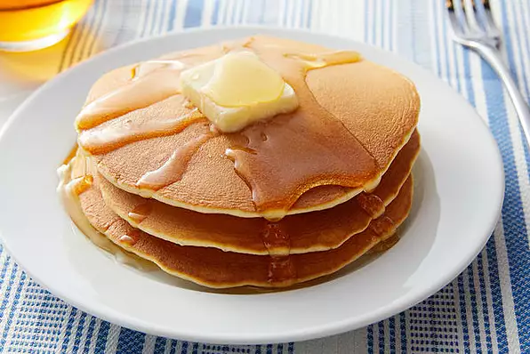

Pancake

Description
This recipe doesn't require much thought early in the morning, and tastes
great!
- Prep: 5 mins
- Cook: 10 mins
- Total: 15 mins
- Servings: 4
- Yield: 4 servings
Ingredients
- 1 cup all-purpose flour
- 2 tablespoons white sugar
- 2 teaspoons baking powder
- 1 teaspoon salt
- 1 egg, beaten
- 1 cup milk
- 2 tablespoons vegetable oil
Steps
-
In a large bowl, mix flour, sugar, baking powder and salt. Make a well
in the center, and pour in milk, egg and oil. Mix until smooth.
-
Heat a lightly oiled griddle or frying pan over medium high heat. Pour
or scoop the batter onto the griddle, using approximately 1/4 cup for
each pancake. Brown on both sides and serve hot.